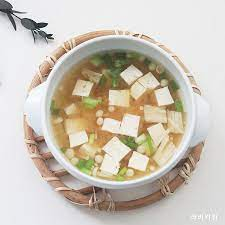
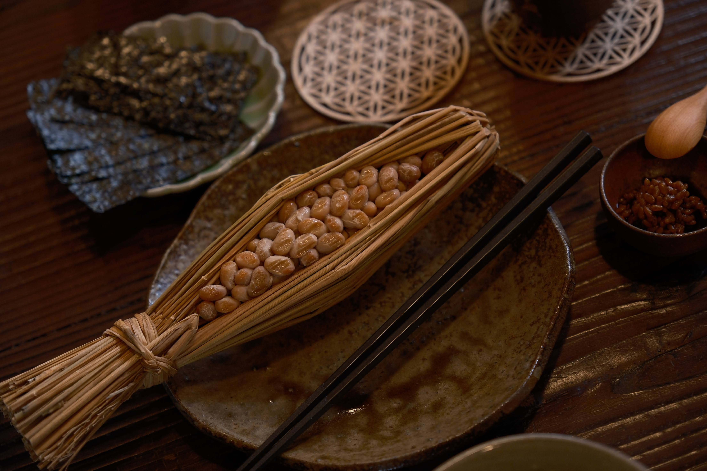
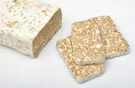
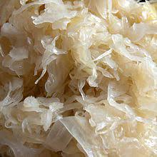
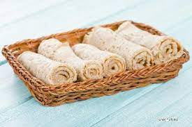
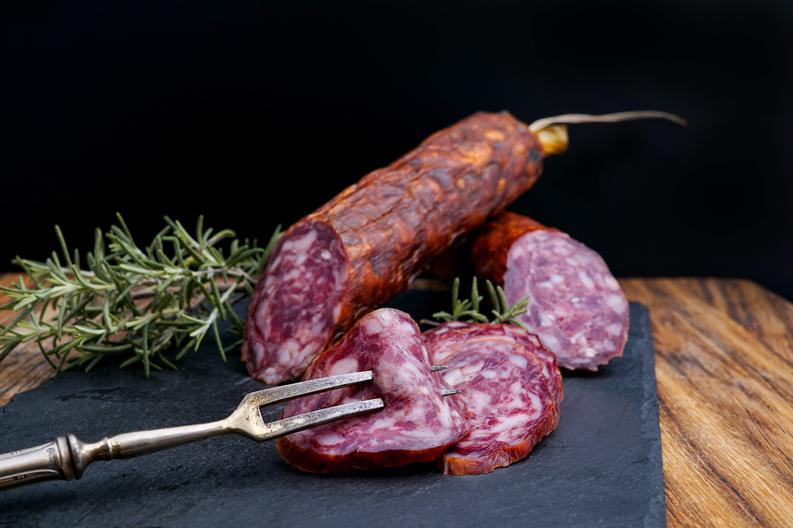
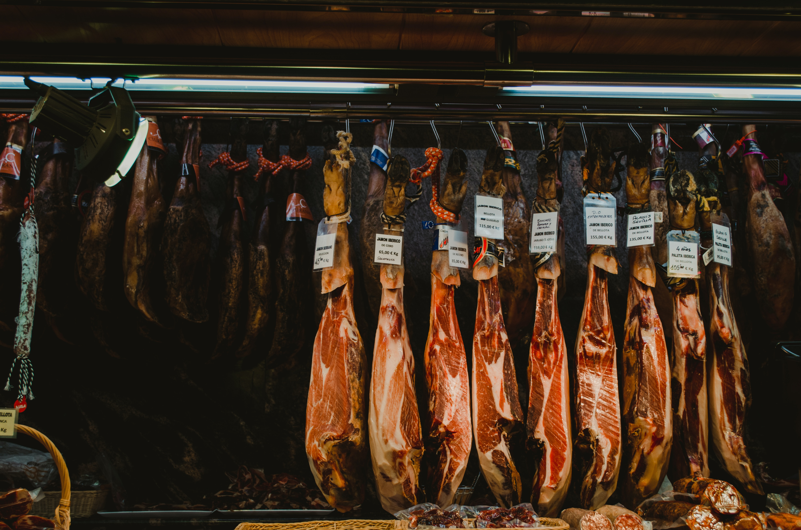

3. 발효음식의 세계
발효식품의 종류는 다양하다. 불가리아의 요구르트는 이미 전 세계인이 사랑한 발효식품이 됐다. 이와 더불어 세계 각국에선 각자의 방식으로 다양한 발효식품을 즐기고 있다.
김치
한국의 김치는 발효식품의 선두주자다. 한국의 5대 채소가 바로 김치의 재료다. 배추와 무를 주재료로 삼아 마늘, 양파, 고추에 젓갈을 더해 발효시킨다. 김치의 우수성은 나날이 부각되고 있다. 최근엔 김치가 겨울철에 꼭 필요한 건강식품이라는 점도 입증했다. 한국식품연구원·고려대·세계김치연구소가 참가한 공동 연구팀은 김치 등 우리나라의 전통 발효식품에서 발굴한 유산균이 인플루엔자 바이러스를 억제한다는 사실을 최초로 입증하기도 했다.

된장
된장 역시 한국인에게 빼놓을 수 없는 양념의 하나다. 된장은 청국장, 고추장과 마찬가지로 콩을 발효시켜 만든 식품이다. 된장은 곡류 단백질에서 부족해지기 쉬운 필수 아미노산과 지방산, 유기산, 미네랄, 비타민 등을 보충해준다. 특히 된장은 다른 나라의 발효식품에 비해 숙성 기간이 길다. 다른 나라에서 진균류를 이용한 발효식품의 경우 1달 이내의 숙성기간을 가지지만 된장은 세균과 곰팡이, 효모의 공동 발효로 최소 6개월 이상의 발효기간을 가진다. 오래 숙성할수록 맛이 더욱 깊어진다. 고혈압, 치매 예방 효과는 물론 항암, 항산화 작용도 한다.

미소(miso)
된장과 닮은 일본의 발효식품은 미소다. 일본은 높은 온도와 습도로 인해 된장과 같은 방식으로 만들면 부패가 나타난다. 때문에 일본에선 곡물에 누룩곰팡이를 배양시켜 번식시킨 후 콩과 섞어 미소를 만든다. 미소의 종류는 상당히 다양한데, 이는 누룩의 종류에 따라 분류되기도 한다. 대두에 쌀누룩을 넣어 만든 미소는 코메미소, 대두에 보리누룩을 넣어 만든 미소는 무기미소라 한다. 콩누룩을 넣으면 마메미소, 몇 종류의 누룩을 혼합하면 쵸우고우 미소가 된다.
낫토(natto)
한국의 청국장과 비슷한 일본의 또 다른 발효식품은 낫토다. 낫토는 대두를 삶아 볏짚으로 싼 뒤 따뜻한 곳에 하루 정도를 두며 발효시킨다. 콩을 삶아 발효시키는 낫토는 곰팡이가 아닌 박테리아를 사용한다. 청국장과 비슷하지만, 콩을 집어들었을 때 실처럼 쭉쭉 늘어지는 끈끈한 점액이 낫토를 감싸고 있다는 것이 특징이다. 발효를 시킨 뒤에는 숙성의 과정을 거친다.
템페(tempeh)
인도네시아의 대표적인 발효식품이다. 청국장, 낫토와 마찬가지로 콩을 발효해 만든다. 겉모습은 두부와 비슷하지만 상당히 단단한 상태라는 점이 특이하다. 템페는 콩을 불려 껍질을 벗긴 후 살짝 익힌다. 그 다음 익힌 콩에 라이조프스 곰팡이균을 섞은 후 얆게 펴고 30℃ 정도에서 하루나 이틀 정도 발효시킨다. 발효가 잘된 템페는 콩 사이사이에 흰색 균사체가 꽉 들어찬다. 온도가 높거나 낮은 상태에서 발효된 것은 표면이 검게 변해 맛이 떨어진다.
사우어크라우트(sauerkraut)
독일이나 유럽에서 가장 흔히 먹는 발효식품이다. 우리나라의 김치에 해당하는 식품이다. 잘게 썬 양배추를 발효시켜 시큼한 맛을 나게 하는 독일식 김치다. 독일에서는 기름기가 많은 고기류와 많이 곁들여 먹는다.
인제라(injera)
에티오피아 사람들에겐 빼놓을 수 없는 식품 중 하나가 바로 인제라다. 인제라는 테프 가루에 물, 소금, 효모를 넣고 반북 사흘간 발효시켜 만든 빵이다. 에티오피아에서는 매 식사마다 식탁에 올라와 다른 요리와 곁들여 먹는다. 고기나 야채 스튜가 잘 어울린다.
살라미(salami)
이탈리아를 대표하는 소시지 살라미도 발효식품이다. 소고기와 돼지고기의 등심살에 돼지기름을 넣고 소금 향신료로 간을 세게 맞춘 후 럼주를 넣고 발효 건조시킨다. 훈연법을 쓰지 않고, 저온에서 장시간 건조했기 때문에 보존성이 좋다. 2년은 거뜬히 보존할 수 있다. 얇게 썰어 카나페의 재료로 많이 쓴다.
하몽(jamón)
돼지 뒷다리를 소금에 절여 건조시켜 만든 햄이다. 스페인 전통 음식으로 잘 알려져있다. 하몽은 1000년경 돼지가 스페인으로 수입된 이후 냉장시설이 없던 당시 장기간 보관하고 먹기 위한 저장법으로 개발된 요리다. 따로 익히지 않고 생으로 먹을 수 있다. 과일이나 치즈와 어우러지며 샐러드나 샌드위치에도 많이 들어간다.
느억맘(nuoc mam)
베트남에서 음식의 간을 맞출 때 기본적으로 들어가는 조미료다. 느억(nuoc)은 베트남어로 물, 맘(mam)은 생선이나 고기를 소금에 절여 발효시킨 젓갈을 뜻한다. 느억맘은 생선을 발효시켜 만든 투명한 붉은빛깔의 어장이다. 주로 멸치나 새우와 같은 작은 생선에 소금을 넣고 발효시킨 후 맑은 액만 걸러낸다. 베트남에선 밥에 비벼먹는 것은 물론 짜조와 같은 음식을 찍어먹기도 하고, 음식의 간을 맞출 때에도 쓰는 만능 조미료다.

< 출처 : 리얼푸드 매거진, 전 세계의 발효식품 뭐가 있을까?(2018.2.6 고승희 기자) >